O que é Stop Motion?
Stop motion é uma técnica de animação que consiste em criar a ilusão de movimento a partir de uma série de fotografias sequenciais. Na produção de stop motion, objetos inanimados são fotografados quadro a quadro, com pequenos ajustes entre cada imagem, e, quando reproduzidas em sequência, essas fotografias criam a sensação de movimento.
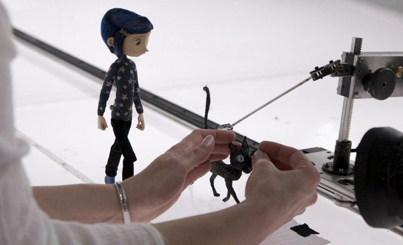
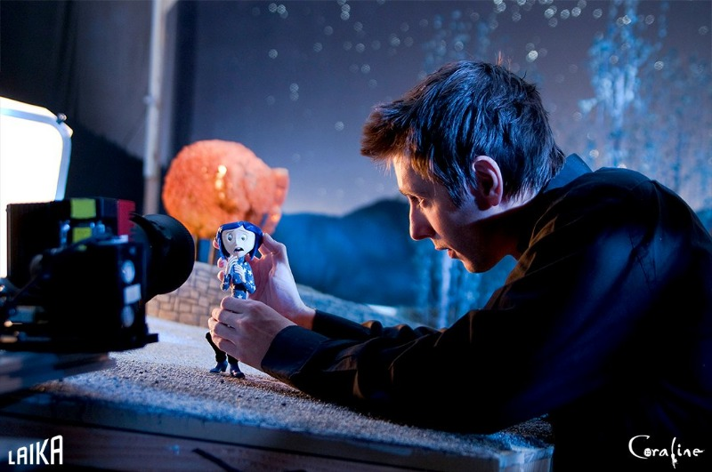
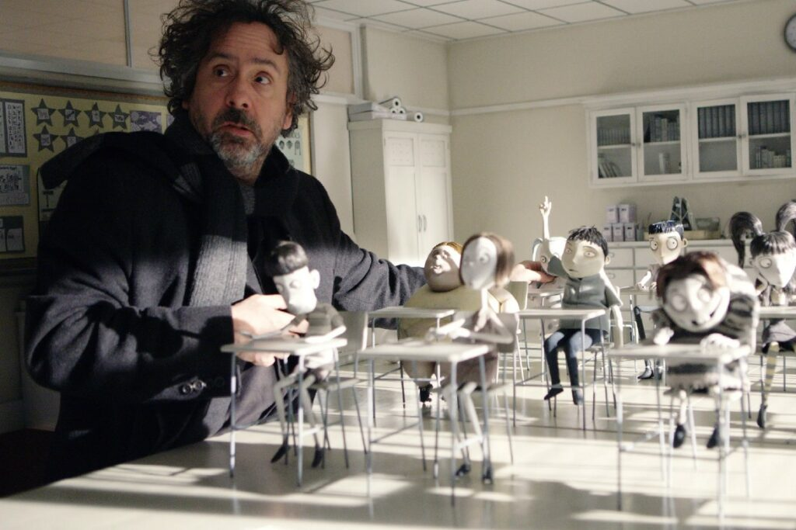
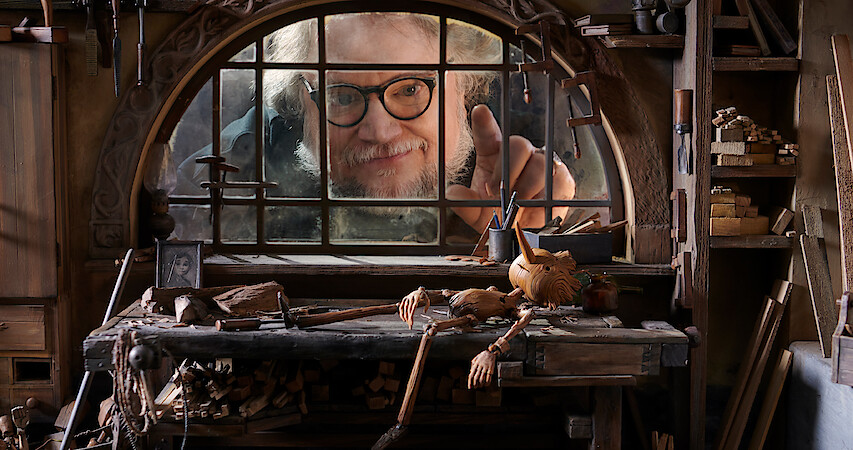
História
O stop motion é uma técnica de animação que surgiu no final do século XIX e evoluiu ao longo do tempo, acompanhando o desenvolvimento do próprio cinema. Um dos primeiros registros dessa técnica é o filme The Humpty Dumpty Circus, criado por J. Stuart Blackton e Albert E. Smith, no qual bonecos articulados eram movimentados quadro a quadro, criando a ilusão de movimento.
Poucos anos depois, em 1902, o cinema deu um grande passo com o filme A Trip to the Moon(Viagem à Lua), de Georges Méliès. Embora não seja um exemplo de stop motion, a obra foi fundamental para o desenvolvimento dos efeitos especiais, influenciando diretamente técnicas que seriam utilizadas posteriormente na animação.
Em 1907, o stop motion começou a se popularizar com The Haunted Hotel, também de J. Stuart Blackton, que apresentava objetos se movendo de forma aparentemente autônoma. Já em 1912, o filme The Cameraman's Revenge, de Władysław Starewicz, trouxe uma evolução narrativa significativa, utilizando personagens e enredos mais elaborados.
A técnica ganhou ainda mais destaque em grandes produções cinematográficas, como The Lost World (1925) e King Kong (1933), ambos com efeitos desenvolvidos por Willis O'Brien, que ajudaram a consolidar o uso do stop motion em Hollywood. Entre as décadas de 1950 e 1970, o animador Ray Harryhausen aperfeiçoou ainda mais a técnica, com destaque para filmes como Jason and the Argonauts.
Na década de 1990, o stop motion voltou a ganhar grande popularidade com The Nightmare Before Christmas(O Estranho Mundo de Jack), produção associada a Tim Burton, que apresentou uma estética marcante e atraiu novas gerações. A partir dos anos 2000, a técnica continuou a evoluir com produções como Chicken Run, do estúdio Aardman Animations, e Corpse Bride(A Noiva Cadáver), que demonstraram maior refinamento técnico.
Mais recentemente, estúdios como a Laika inovaram ao combinar o stop motion com tecnologias modernas, como a impressão 3D, em filmes como Coraline, ParaNorman e Kubo and the Two Strings. Atualmente, o stop motion continua sendo utilizado tanto em grandes produções quanto em projetos independentes, mantendo seu caráter artesanal, mesmo com a integração de recursos digitais.
Dessa forma, é possível observar que o stop motion passou de experimentos simples para uma técnica sofisticada e amplamente reconhecida, desempenhando um papel importante na história da animação e do cinema.
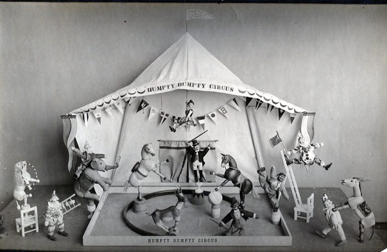
Linha do tempo
| Animação | Ano | Direção | Sobre | Assista! |
|---|---|---|---|---|
| The Humpy Dumpty Circus | 1898 | James Stuart Blackton | Usava brinquedos articulados fotografados quadro a quadro | Clique aqui! |
| Viagem á Lua | 1902 | Georges Méliès | Revolucionou os efeitos visuais e influenciou técnicas futuras | Clique aqui! |
| The Haunted Hotel | 1907 | J. Stuart Blackton | Consolidação da técnica: mostrou objetos se movendo sozinhos. | Clique aqui! |
| A Vingança do Cameramen | 1912 | Władysław Starewicz | Introduziu narrativas mais elaboradas | Clique aqui! |
| The Lost World | 1925 | Harry O. Hoyt | Marco técnico de efeitos visuais | Clique aqui! |
| King Kong | 1933 | Merian C. Cooper e Ernest B. Schoedsack | Marco do Realismo | Clique aqui! |
Galeria de filmes
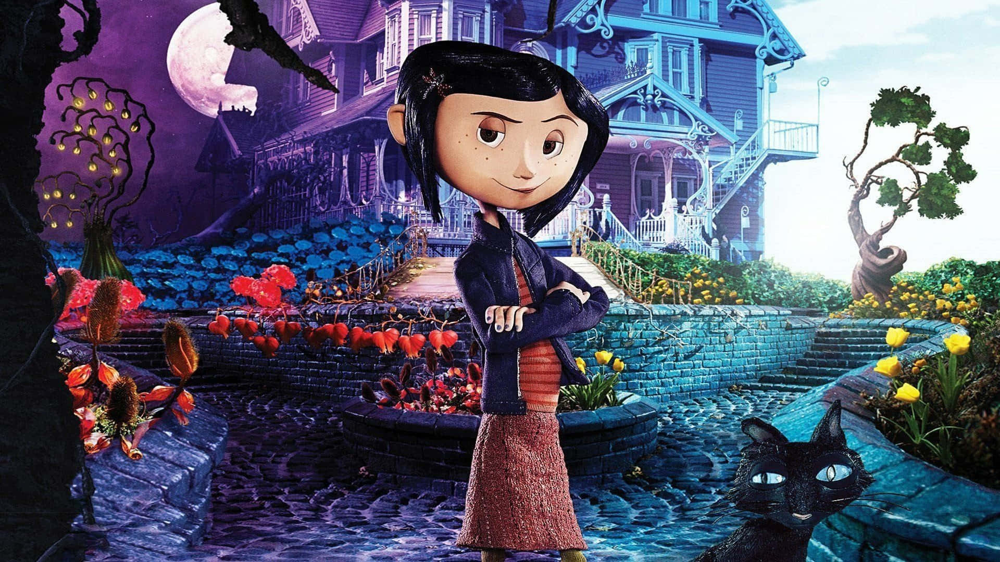
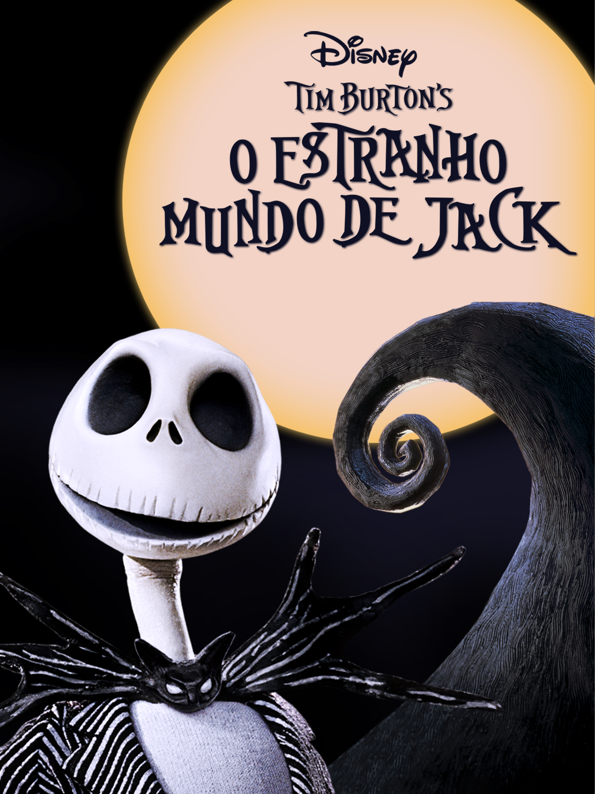
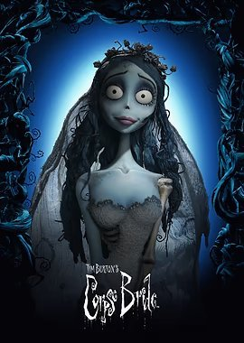
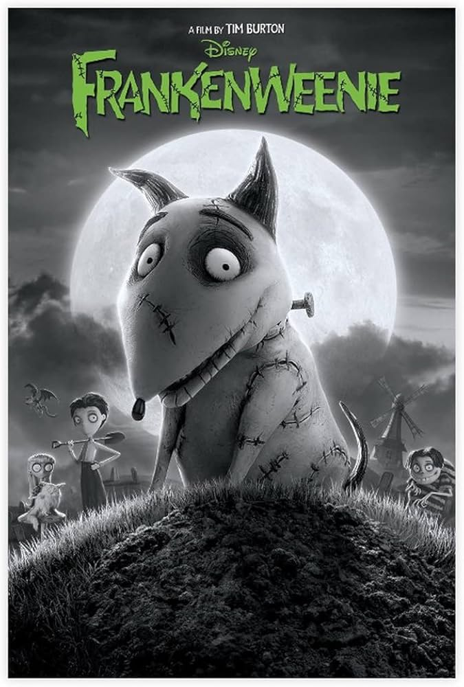
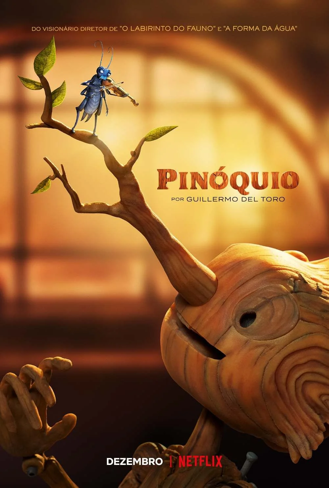
Guillermo del Toro
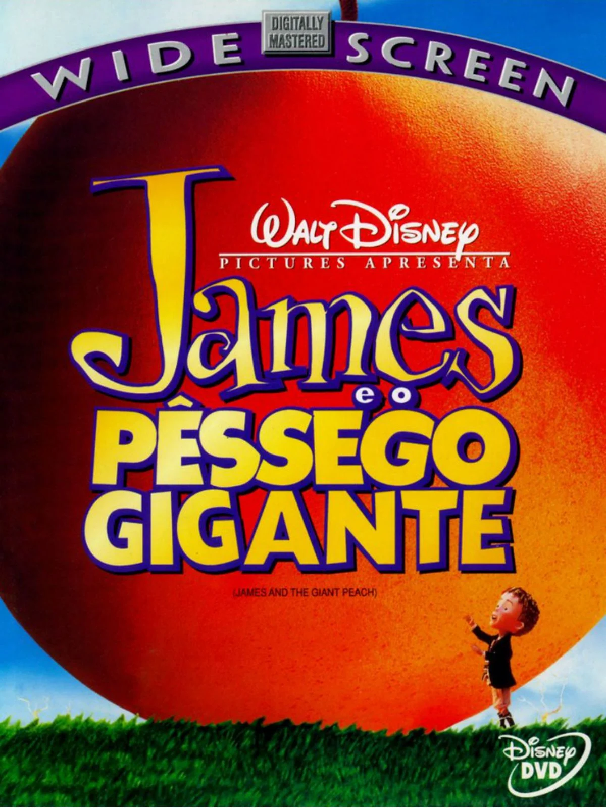
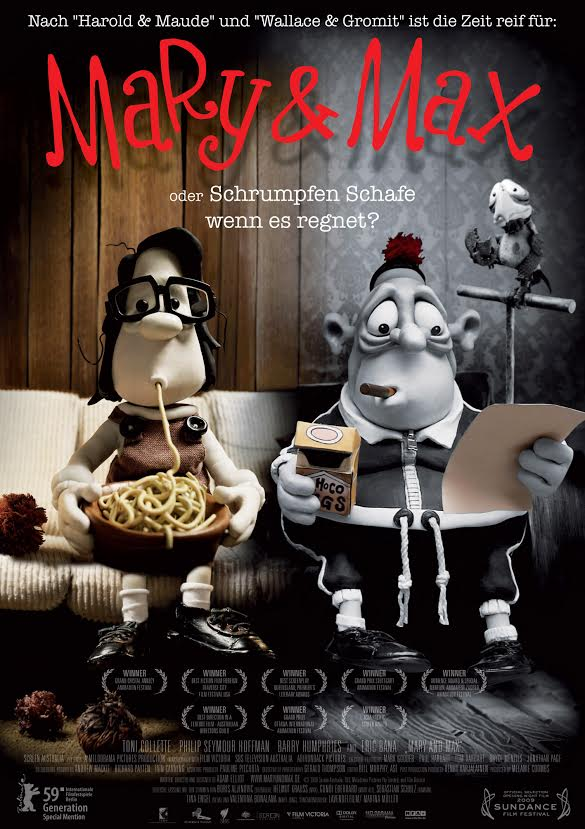
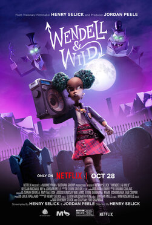
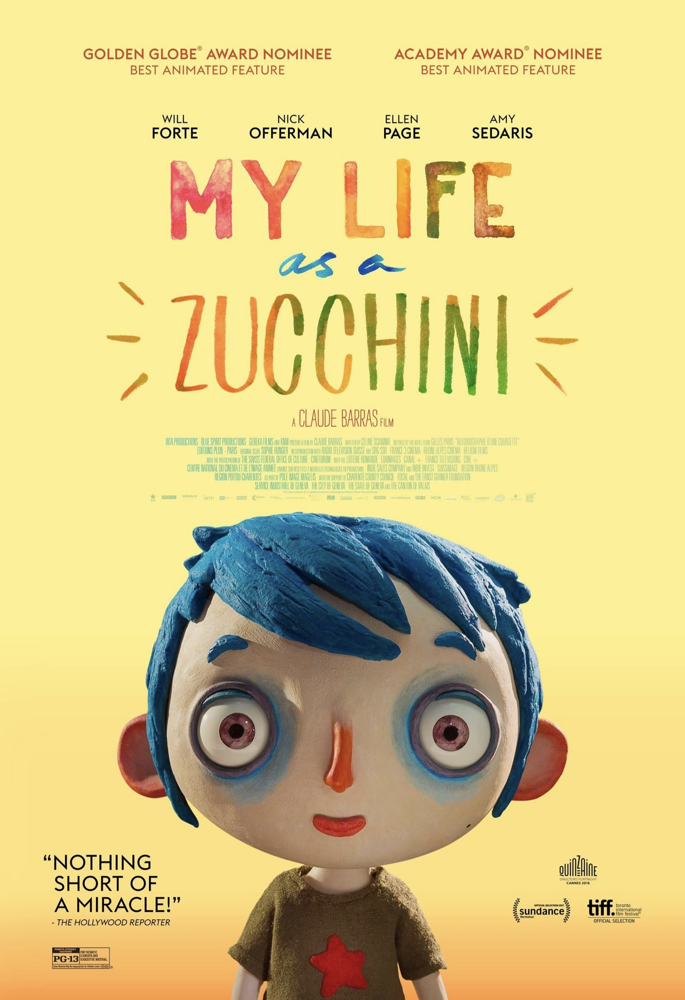
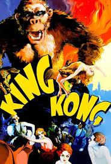
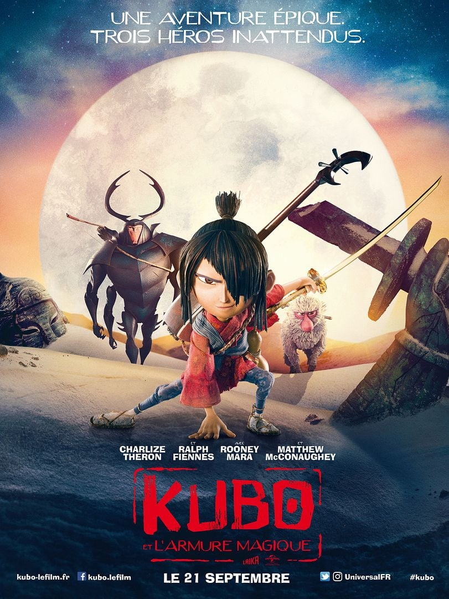
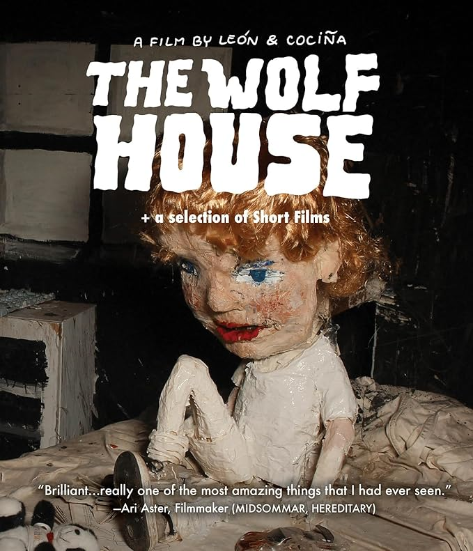
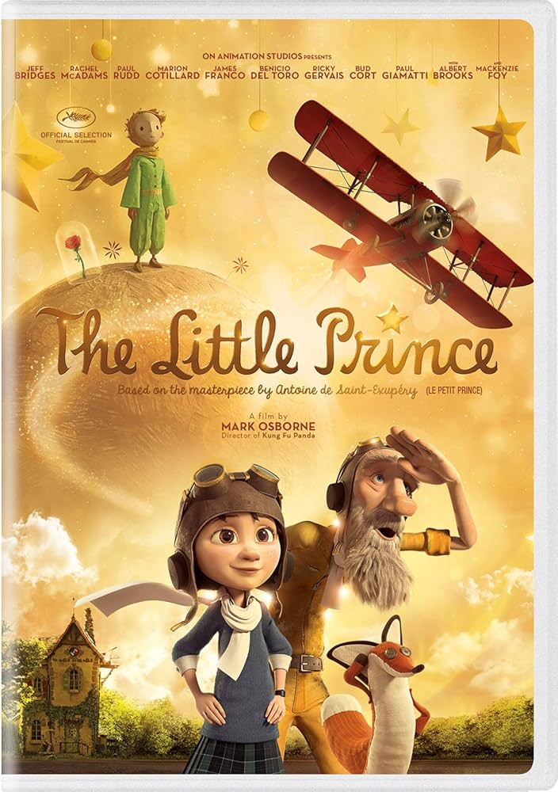
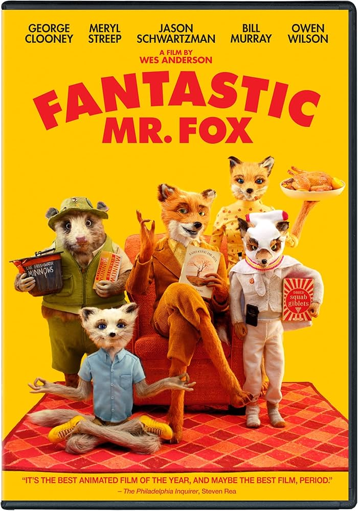
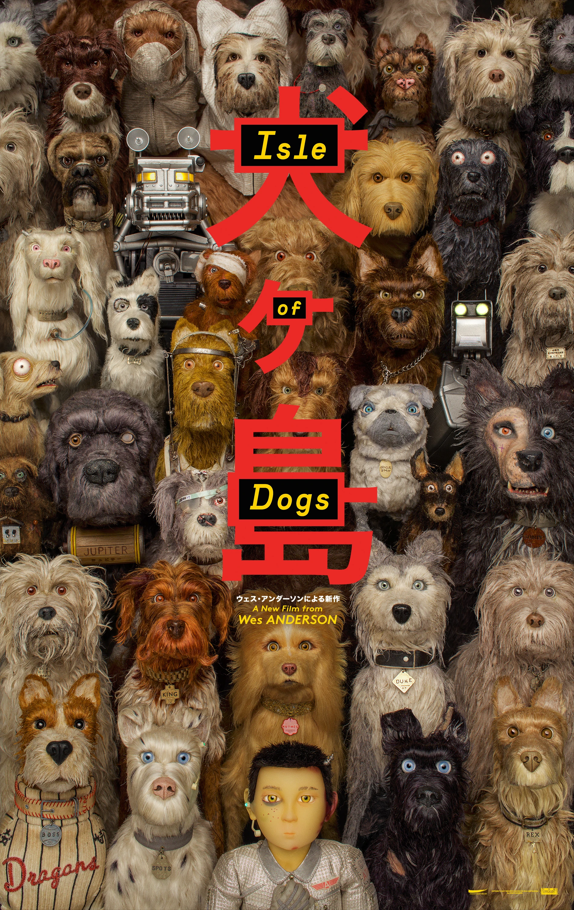

Técnicas
- Claymation (massinha) Animação feita com figuras de massa de modelar (clay). Os personagens são moldados e alterados a cada foto.
- Puppet animation (bonecos articulados) Usa bonecos com estrutura interna (arame ou esqueleto articulado), permitindo movimentos mais precisos.
- Cut-out (recortes) Utiliza figuras recortadas de papel, cartolina ou materiais planos, movidas quadro a quadro.
- Object animation (animação de objetos) Objetos comuns (brinquedos, utensílios, etc.) são animados sem necessidade de personagens moldados.
- Pixilation Técnica que usa pessoas reais como “bonecos”, fotografando-as quadro a quadro para criar movimentos estranhos ou fantásticos.
- Replacement animation (substituição) Partes do personagem (ou o personagem inteiro) são substituídas por versões diferentes para simular movimento ou expressão.
- Brickfilm (Lego stop motion) Animação feita com peças de LEGO ou blocos de montar.
- Silhouette animation (silhueta) Personagens são recortados em forma de sombra, geralmente vistos contra uma luz de fundo.
Trailer do Filme Coraline
Confira o trailer do filme Coraline e o Mundo Secreto, uma das obras mais famosas em stop motion, dirigido por Henry Selick!
Transcrição do vídeo
Coraline Jones sempre sonhou com um mundo melhor, um lugar mais emocionante do que aquele em que vivia. Mas ela nunca imaginou que encontraria esse mundo dentro da própria casa.
Ao atravessar uma passagem secreta, Coraline descobre um universo paralelo onde tudo parece perfeito: seus pais são mais atenciosos, a comida é melhor e a vida é cheia de diversão.
Porém, esse mundo esconde algo estranho e perigoso. Aos poucos, Coraline percebe que aquela realidade não é o que parece e que pode se tornar uma armadilha.
Determinada, ela precisa enfrentar seus medos e encontrar uma forma de salvar seus pais e escapar daquele lugar, antes que seja tarde demais.